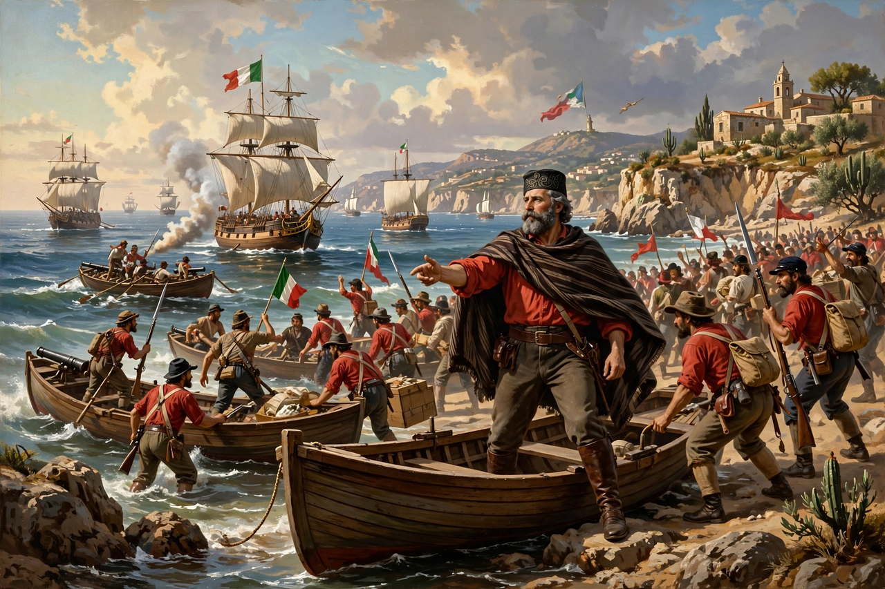

The Expedition of the Thousand (Spedizione dei Mille) was a military campaign undertaken in 1860 by Giuseppe Garibaldi's volunteer corps, the Redshirts, which conquered the Kingdom of the Two Sicilies and paved the way for the unification of Italy.

| Expedition of the Thousand | |
|---|---|
| Date | May – October 1860 |
| Location | Sicily and southern Italy |
| Result | Fall of the Two Sicilies; Italian unification advances |
| Commander | Giuseppe Garibaldi |
About 1,089 volunteers sailed from Quarto near Genoa on two steamers on 5–6 May 1860, landing at Marsala, Sicily, on 11 May. Garibaldi proclaimed himself dictator in the name of Victor Emmanuel II, won at Calatafimi, and took Palermo after street fighting and a truce. After victory at Milazzo he crossed the Strait of Messina, marched largely unopposed to Naples (entered 7 September), and defeated Bourbon forces at the Battle of the Volturno (1 October).
Plebiscites voted for annexation to Piedmont-Sardinia. Garibaldi handed the conquered south to Victor Emmanuel II at Teano on 26 October 1860, famously greeting him as King of Italy; the Kingdom of Italy was proclaimed in March 1861. The campaign is a central episode of the Risorgimento, though historians debate its social consequences for the south (the 'southern question').